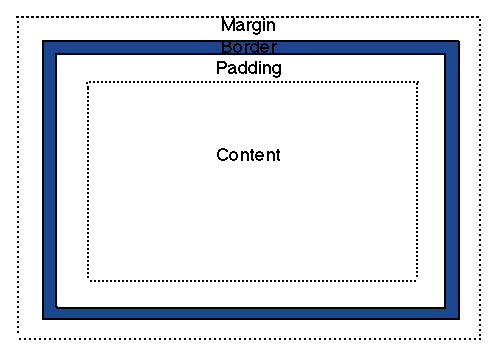

Each element in an HTML document, while not necessarily static in size or shape, is rectangular and has both height and width. Each element is composed of its margin, border, padding, and content. In CSS, the term "box model" is used to refer to these components. The total width and height of an element is the sum of these four components. The image below illustrates this concept.
The content contains any text and images in the element.
The padding surrounds the content, shares its background color, and creates empty space between the content and its border.
The border surrounds the padding, and has its own color and style.
The margin surrounds the border, is transparent, and creates empty space between the element and other elements on the page.
To understand how to calculate the total width of an element, consider as an example an element styled with the following CSS:
Width: 500px /*This sets the width of the content area only*/